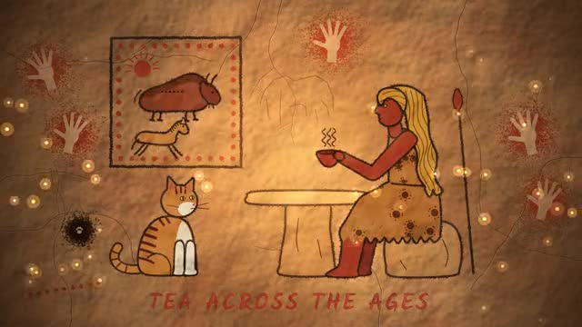
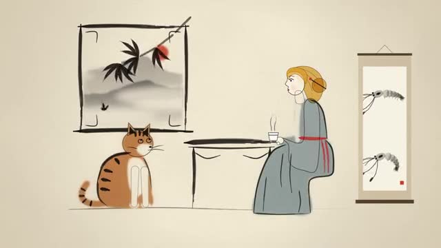
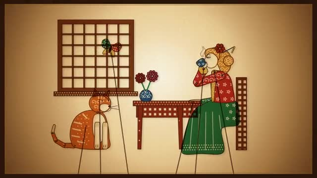
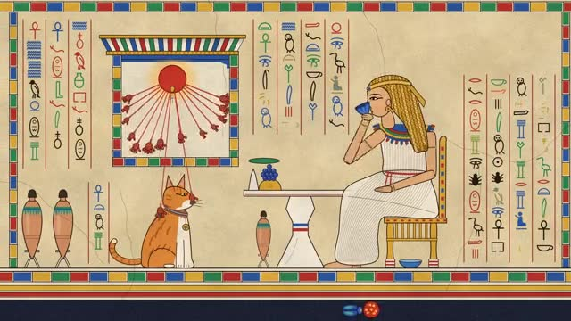

Library / World Culture Styles
12 keywords in this category, each one tested and explained in plain language.
Pick keywords as you browse, then press Copy for AI and paste into ChatGPT, Claude or any AI. Copy keywords gives a plain list for Midjourney or Seedance.
Painted, glazed ceramic tiles that cover walls, churches and whole building fronts in Portugal.
Cloth decorated with a wax-resist method: wax blocks the dye in some places, leaving the pattern behind.

The oldest art we know: animals drawn in red ochre and charcoal on rough rock walls, stencilled handprints, and flickering firelight bringing it all to life.

Black ink brushed onto paper or silk, from deep strokes to pale grey washes.

Translucent leather puppets lit from behind a paper screen: lace-like cut patterns, glowing color, jointed limbs moved on rods and the warm flicker of an oil lamp.
Buddhist cave paintings from the Silk Road in China: earthy red backgrounds, mineral greens and blues, flying celestial figures trailing long ribbons, and paint worn and flaking with age.

Ancient Egyptian wall art: figures with side-on faces and front-facing eyes, flat bright colors, crisp outlines and rows of hieroglyphs in neat bands.
Interlocking stars, polygons and rosettes that repeat endlessly, found in tilework, carved wood and plaster across the Islamic world.
A folk painting tradition from the Mithila region of Bihar, India, and nearby Nepal.
Mexican tissue paper banners with delicate cut-out flowers, birds and skulls, strung in bright rows overhead.
Small, richly detailed paintings made for illustrated books in Persia, today's Iran.
Hand-stitched designs from Otomi (Hñähñu) communities around Tenango de Doria in Hidalgo, Mexico.